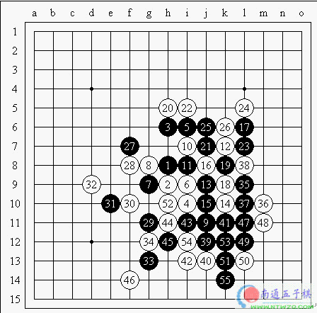

中国队以1.5比2.5输给日本队的消息传回北京后，令大家的心情都很郁闷，虽说胜败乃兵家常事，但输给本次实力上很弱的日本队，我想不单单是参赛的这几名选手，后方的广大五子棋爱好者想来心理也是不好受的，那么我们就快速看看他们输在那里！
本局日本棋手冈部宽持黑对中国的陈伟，实战选择很平衡的瑞星局，到12手是双方都可以接受的一个固定变化，13有很多的选择，实战的选择感觉更平稳一些，白棋14防守，15没有走52位的流行变化，而是选择直接活三的变化，黑棋17的防守很好！如果过分的走在52位，白棋于43位防守后，黑棋接下去没有好的发展机会。白18直接走20位更好，白棋20属于攻防一体的好点，紧紧的咬住对手，逼得黑棋只能很被动的防守，白棋22进一步施压，随后黑棋通过23手的做杀，然后利用25的冲，再到27位的防守，暂时摆脱了白棋的压迫，但我们可以明显的感觉到，通过挤压对手，白棋已经在棋盘上面一带建立了优势，应该说是得了分的结果。此时，对于黑棋以后的下法，大概可以预见到，就是先手去和白棋交换，尽量压缩空间，最后，转身到上面去防守白棋。形势对于白棋是很好的！黑棋29和31就是先手的控制局面的下法。白棋32败招！过分的一手，它将黑棋逼上了绝路，意味着黑棋走不出棋的话，那黑棋以后在棋盘上边一带的控制权完全丧失。黑33妙手！我想此时双方都看见了黑棋从棋盘右边借过来棋的下法，但白棋也实在不敢39位的防守，那样黑棋抢到34位，可以说优势太大了，估计此时白棋十分懊悔自己的32手！之所以白棋实战还防在34位，我看也是及希望于黑棋连接线路上的选择有失误。但后面黑棋一气呵成，计算没有失误，最终黑棋获胜！
五子棋的做杀：除了活三和冲四这样的进攻棋形，做杀也是一个很重要的进攻棋形，简单说就是你走了一步棋后，下步隐藏着冲四活三胜的棋形，而我们就称这步棋叫做杀，做杀具有很强的隐蔽性，所以熟练掌握后你的胜率就会有很大的提高。
哎，中国连珠......